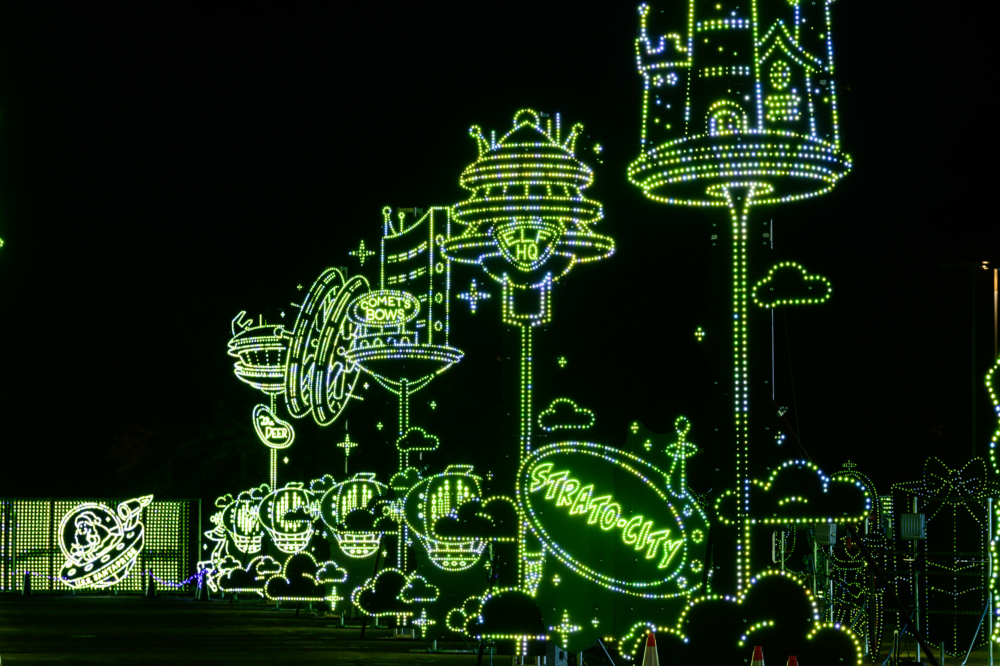

How it all Began

Founded 2016
Built on a simple but powerful idea: light has the ability to stop people in their tracks, bring them together, and make the world feel a little more magical.
What started as a single show has grown into something we never imagined. A decade later, we've toured cities nationwide, welcomed millions of families, and we're still building new worlds every season.





We spend all year chasing one moment. Every theme, every light, every note built for the second you roll through our gates and the world outside disappears.